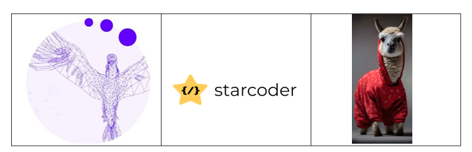
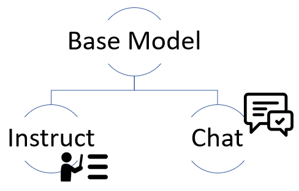
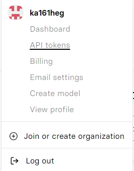
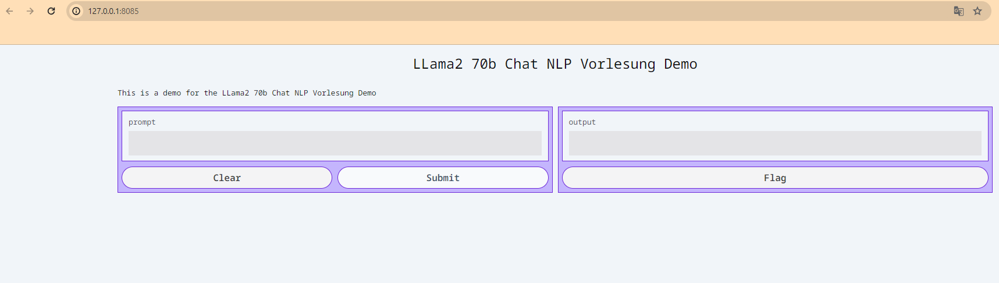

Open-Source Large Language Models¶
Author: Karoly Robert Hegyi, 21.12.2023
An overview of open source large language models (LLMs): what open source alternatives exist to OpenAI's GPT-3.5 and how can I utilize them?
Open Source large language models (OSLLMs) are powerful, open-source AI models for natural language processing tasks. Unlike proprietary models, they are transparent, facilitate collaboration, and foster innovation in applications such as translation, text generation, and chatbots.
Availability of Large Language Models¶
They are distinguished into:
| Proprietary LLMs | Open Source LLMs |
|---|---|
| Owned by a company that controls its use | Free of charge and accessible to everyone |
| License fees required. | Free commercial use permitted. |
Various licenses exist for open-source software, with the majority adhering to the Apache 2.0 standard.
Apache 2.0
Allows users to use, distribute, modify, and distribute modified versions of the software for any purpose under the terms of the license, without worrying about license fees.
Advantages of OS-LLMs¶
- Transparency
- Fine-tuning
- Community
Open-source LLMs not only enable free usage but also impress with transparency by providing insight into architecture, functionality, and training data. Flexibility is enhanced through fine-tuning, allowing customization with proprietary data. Another advantage is the community, fostering continuous improvements and providing a space for the exchange of ideas.
Use Cases¶
- Finance
- Mathematics
- Programming
- Argumentation
- Multilingual translation
These language models can be trained for various use cases, with larger models aiming for a balanced mixture of these individual aspects.
BLOOM¶
Our first large language model (LLM) was Bloom, released in July 2022 as a groundbreaking open-source model. Before Bloom, only a few industrial labs could harness the full potential of large language models due to limited resources and rights. Bloom broke this status quo as the first multilingual LLM trained transparently.

With training in 59 languages and an impressive 176 billion parameters, Bloom set a milestone for the accessibility and transparency of large language models.
Note
It is noteworthy, however, that this model requires 180 GB of storage and 360 GB of GPU RAM for operation.
Falcon Series¶
After Bloom, many more LLMs were released, including the models of the FALCON series from the Technology Innovation Institute (TII) in Abu Dhabi, approximately a year later. The first two models in this series have 7B and 40B parameters. Additionally, these models are available under the APACHE 2.0 license, allowing for commercial use as well.

Falcon 180B
🏆 In September 2023, the TII unveiled the big brother of the Falcon series with 180B parameters, which, upon its introduction, achieved the highest rankings in most benchmarks. The key to its success lay in its high-quality dataset, which was also released as open source.
The dataset¶
| Data source | Fraction | Tokens | Sources |
|---|---|---|---|
| RefinedWeb-English | 75% | 750B | web crawl |
| RefinedWeb-EU | 7% | 70B | European web crawl |
| Books | 6% | 60B | |
| Conversations | 5% | 50B | Reddit,StackOverflow |
| Code | 5% | 50B | |
| Technical | 2% | 20B | arXiv,PubMed, etc. |
The new dataset RefinedWeb represents an innovative, comprehensive web dataset based on CommonCrawl. Falcon enhances this data through deduplication and rigorous content filtering. In addition to RefinedWeb, books, conversations, code, and technical-scientific papers were also utilized.
The model was primarily trained in English, but 7% of the dataset was expanded to European languages.
| Language | Fraction | Tokens |
|---|---|---|
| German | 26% | 18B |
| Spanish | 24% | 17B |
| French | 23% | 16B |
| Italian | 7% | 5B |
| Portuguese | 4% | 3B |
| Other | 16% | - |
Required Resources
⚠️ The significance of the parameter count becomes apparent as the training of such models is costly and resource-intensive.
7B Model
- Training: 384x A100 40GB GPUs for 2 weeks
- Usage: minimum 16 GB GPU-RAM
40B Model
- Training: 384x A100 40GB GPUs for 2 months
- Usage: minimum 90 GB GPU-RAM
180B Model
- Training: 4,069x A100 40GB GPUs (AWS)
LLaMa¶
Another success among open-source LLM models is the Llama model by Meta.

LLaMA 1¶
The first Llama model, released on 24.02.2023, achieves performance comparable to OpenAI's GPT-3 model.
Versions:
- 7B
- 13B
- 33B
- 65B
Warning
Unfortunately, the open-source model is limited to non-commercial use.
Open LLaMA¶
In response, a group of students at UC Berkeley in California founded OpenLM Research. Two months later, they released the OpenLLama model based on Meta's LLAMA model.

OpenLLama offers models in versions with 3B, 7B, and 13B parameters. Particularly interesting are the powerful yet "small" V2 models with 3B and 7B parameters. These compact yet powerful models were developed from a specially curated dataset.
They are a combination of the Refined Web dataset from Falcon, the Starcoder dataset, and the Redpajama dataset, which is a reproduction of the LLaMA dataset.

LLaMA 2¶
Three months after OpenLLama, Meta releases the LLaMA 2 model, which is open source this time (also for commercial use). Meta's models are impressive, especially the model with 70 billion parameters.
Versions:
- 7B
- 13B
- 70B
LLaMA2 Fine-tuning¶
So far, I've told you about how a large language model is structured and how large these models actually are. But they are just the base models. How do I turn my model into an assistant? We want to ask questions and generate answers. For this, the base model is fine-tuned on a new dataset that shows the model how to generate responses based on instructions.

Instruct Datasets
Some of these Instruct datasets include:
- Alpaca Dataset: self-instruct from davinci-003 API (52K samples)
- Vicunna Dataset: user-shared conversations from ShareGPT.com (70K samples)
- Open Orca: Approx. 4 million ChatGPT3.5 and ChatGPT 4 prompts and responses
DEMO LLaMA 2 70B¶
Method 1 - Web Application¶
Through the web application https://www.llama2.ai, hosted by Replicate, you can interact with the model and personalize the parameters.
Method 2 - Via API¶
Alternatively, you can use the API to interact with the model. This is particularly useful if you want to integrate the model into your own application.
-
Sign in to replicate.com with GitHub. Click on your name -> API Tokens -> Copy API Token.

-
Open VSCode or another IDE.
-
Install Replicate
-
Set Replicate API Token
-
Run the LLaMA 2 Model
import replicate # Create Output: Set Model, adjust parameters, change prompt ... output = replicate.run( "meta/llama-2-70b-chat:02e509c789964a7ea8736978a43525956ef40397be9033abf9fd2badfe68c9e3", input={ "debug": False, "top_k": 50, "top_p": 1, "prompt": "Can you write a poem about open source machine learning? Let's make it in the style of E. E. Cummings.", "temperature": 0.5, "system_prompt": "You are a helpful, respectful and honest assistant. Always answer as helpfully as possible, while being safe. Your answers should not include any harmful, unethical, racist, sexist, toxic, dangerous, or illegal content. Please ensure that your responses are socially unbiased and positive in nature.\n\nIf a question does not make any sense, or is not factually coherent, explain why instead of answering something not correct. If you don't know the answer to a question, please don't share false information.", "max_new_tokens": 500, "min_new_tokens": -1 } ) -
Create full output:
Optional: GUI with Gradio¶
If you want to create a small UI so you can interact with your model, you can use Gradio.
-
Install Gradio
-
Generate function:
def generate(prompt): output = replicate.run( "meta/llama-2-70b-chat:02e509c789964a7ea8736978a43525956ef40397be9033abf9fd2badfe68c9e3", input={ "debug": False, "top_k": 50, "top_p": 1, "prompt": prompt, "temperature": 0.5, "system_prompt": "You are a helpful, respectful and honest assistant. Always answer as helpfully as possible, while being safe. Your answers should not include any harmful, unethical, racist, sexist, toxic, dangerous, or illegal content. Please ensure that your responses are socially unbiased and positive in nature.\n\nIf a question does not make any sense, or is not factually coherent, explain why instead of answering something not correct. If you don't know the answer to a question, please don't share false information.", "max_new_tokens": 500, "min_new_tokens": -1 } ) full_output = "" for item in output: full_output += item return full_output -
Launch Gradio
import gradio as gr title = "LLama2 70b Chat NLP Lecture Demo" description = "This is a demo for the LLama2 70b Chat NLP Lecture Demo" gr.Interface(fn=generate, inputs=["text"], outputs=["text"], title=title, description=description, theme= 'finlaymacklon/boxy_violet').launch(server_port=8085, share=True)Example Running on local URL: http://127.0.0.1:8085

Key Takeaways¶
- There are many open-source models you can try for your product.
- A 3 or 7-billion-parameter model is particularly valuable for the open-source community as it can run on a variety of GPUs, including many consumer GPUs.
- Llama 7B -> 28GB of GPU RAM to run locally
- Perhaps fine-tune a smaller model for a specific use case?
- A qualitative dataset is important for both training and fine-tuning.